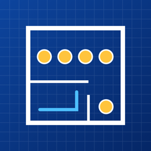

Construction Takeoff - Tally
Tally counts, measures and marks up construction plan PDFs on iPad, iPhone and Mac. This guide follows the app's tool bar from left to right: Move, Take off, Markup, Edit, Erase and Calibrate. Features marked Pro need Tally Pro.
Plans and sheets · Scale · Counting · Lengths and areas · Zones · Markup · Editing · Pricing and the bid · Exports · Revised sets · iPad and Mac
Plans and sheets
- Import: tap + in the library and pick a plan set PDF, or a photo or scan of a sheet (JPEG, PNG, HEIC). You can also open a PDF in Tally from Files, Mail or the share sheet, or drop it on the library. Pick a starter item list (electrical, drywall and framing, flooring, roofing, plumbing, HVAC, concrete, painting) or start blank.
- Sheets: the sheet button at the top left (it shows the sheet number, such as E-101) opens every sheet as a thumbnail. Sheet numbers are read from the title blocks. Use the arrows (⌘← and ⌘→ on a Mac) to step through the set.
- Search: type in the sheet browser to find a sheet by number, or any text on the plans: a fixture tag, a room name, a note. A result opens its sheet zoomed to the text. Scanned sheets have no text to search at first, so Tally reads them the first time you search (a few seconds a sheet) and keeps what it read.
- Rotate sheet (scale menu, ⌘R) turns a sheet that's stored sideways. The plan file isn't changed.
Scale
- Pick the sheet's scale from the scale menu (architectural or engineering), or choose Calibrate, tap the two ends of a dimension you know and type its length, such as
20',20' 6"or3.5 m. Use the longest dimension you can find. - With a scale set, calibrating again first shows the line's length at the current scale, so you can check that a sheet was printed to scale.
- Use this scale on all sheets copies it to the rest of the set. Repeat this sheet counts a typical floor more than once.
Counting
- Choose Take off, pick an item from the item menu, and tap each symbol.
- Find all (Pro): zoom in until a symbol is easy to tap, turn on Find all and tap one copy. Every match on the sheet is ringed for you to check; tap Add. Then All sheets looks for the same symbol on the rest of the set.
- Hide counted symbols (item menu) covers what you've counted, so what's left stands out. Marker size makes markers smaller on a crowded sheet.
- Show only this item's marks (item menu) hides the other items while you work.
Lengths and areas
- For a length item, tap along the run and tap Done. For an area, tap its corners and tap Done. Taps snap to the drawing's own lines (Snap turns this off).
- Arc adds a curve: tap a point on the curve, then where it ends. Deduct draws a cut-out that is subtracted from the area.
- Room (Pro): tap inside a room and its walls give the area, or the perimeter for base and trim. All rooms outlines every room on the sheet; tap any you don't want, then Add.
- In an item's settings: a wall height turns a run into wall area; a roof pitch turns plan area into true roof area; a depth turns a slab, base or excavation into cubic yards (and it can be priced per cubic yard); extra per run adds drops or makeup to every run.
Zones
- Zones split quantities by floor, area, phase or alternate. Add one from the item menu (Add a zone), or from the zone menu once you have some.
- Marks you add go in the zone you've picked, and the item list totals that zone. Pick All zones for the whole job.
- Put this sheet's marks in zone (scale menu) assigns a whole floor at once; in Edit, Move to zone reassigns the marks you've picked. Manage zones renames, reorders or deletes them (deleting a zone keeps its marks).
- Exports add a breakdown by zone.
Markup
Choose Markup, then the type from the markup menu:
- Cloud, Arrow, Callout, Note, Highlight: two taps (a note, one).
- Pen: write or sketch with Apple Pencil, a finger or the mouse. After an Apple Pencil has drawn (or with iPadOS's Only Draw with Apple Pencil on), fingers move the sheet. Strokes drawn nearly straight become straight lines; turn that off in the Style menu. A tap makes a dot.
- Stamp: APPROVED, APPROVED AS NOTED, REVISE AND RESUBMIT, REJECTED, FIELD VERIFY, NOT IN CONTRACT, PUNCH and COMPLETE, plus your own (New stamp in the stamp menu).
- Photo: tap a spot, then take a photo, pick one from your library, or choose a photo file (from Files, or the Finder on a Mac). The photo is pinned there with an optional caption. With Move, tap the pin to see the photo, share it or caption it.
- Dimension reads its length at the sheet's scale; Angle (three taps: one side's end, the corner, the other side's end) reads its degrees. Neither adds to your quantities.
- Style: each markup type keeps its own colour and line weight, for every takeoff, until you change it.
- Markups (top bar) lists every markup by sheet as a punch list: tap the circle to mark one resolved, or the row to go to it.
Editing
- Choose Edit and tap a mark or markup. Drag a handle to move that point, or drag the mark to move all of it. One Undo puts it back.
- Select area: drag a box to pick everything inside it, then drag any of them to move them together, or Copy, Delete, Move to zone or restyle them.
- Copy and Paste (⌘C and ⌘V on a Mac, and ⌘X to cut) copy marks and markups onto another sheet, in the same place, or into another takeoff (marks go to its item of the same name). Pasted marks go in the zone you're working in, so a typical floor copied onto the next sheet counts for that floor.
- With a callout picked, Add leader points it at one more spot. Edit text changes a note, callout, stamp or caption.
- Erase removes what you tap. Undo and Redo (⌘Z, ⇧⌘Z) step through every change.
Pricing and the bid
- Give each item a unit cost and waste %. Add materials to an item (a receptacle's box, device and plate; a wall's studs and board) and exports add up a materials list.
- Under the total in the item list, Add overhead, profit and tax sets contingency, overhead, profit and tax as percentages of the takeoff cost, for the bid total.
- Duplicate an item (with its marks) to price a variant; Move marks to fixes marks counted against the wrong item.
Exports (Pro)
- Excel workbook with live totals: change a price or a percentage in Excel and the bid updates. Sheets for materials, zones, sheets and markups.
- CSV for your estimating software.
- PDF report: a quantity summary, the bid, every marked-up sheet with its own quantities, and your photos.
- Plan PDF with markups: the plan set with your marks and markups as standard PDF annotations, for Bluebeam, Acrobat or Preview, followed by your photos.
- Markups as a punch list (CSV).
Revised sets
- In the library, Replace with revised set moves a takeoff onto an addendum or revision. Marks follow their sheets by sheet number, even if sheets were added or reordered. The previous plan and takeoff are kept.
- Compare overlays a sheet on the version it replaced: removed in red, added in blue.
iPad and Mac
- Open in New Window (⌥⌘N, or a sheet's menu in the sheet browser) shows a sheet in a window of its own beside the one you're taking off, with your marks updating live.
- On a Mac: ⌘1 to ⌘6 pick the tools, ⌘F turns on Find all, ⌘+ and ⌘− zoom, ⌘0 fits the sheet.
- Tally Pro bought on one device unlocks it on your others with the same Apple Account.